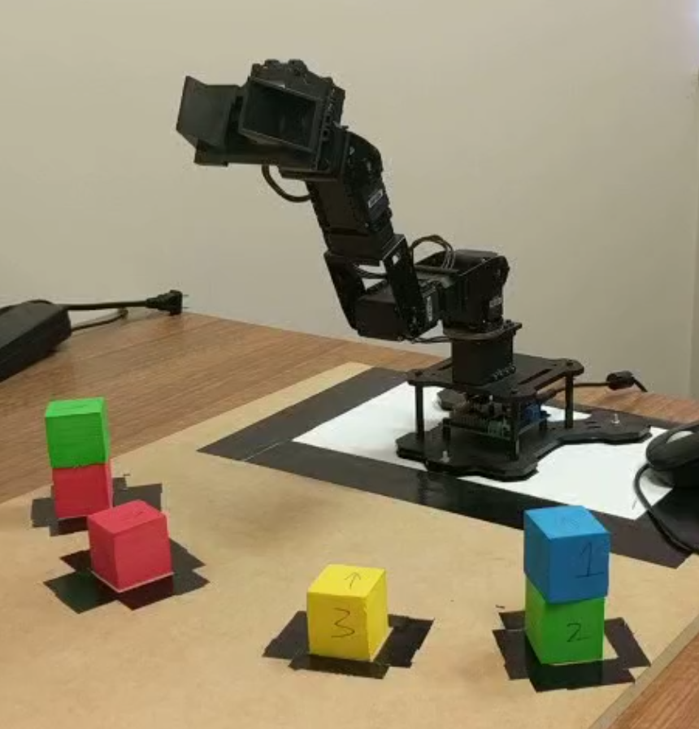

Hi! I am a computer scientist graduate
Education
Western Sydney University Kingswood Bachelor of Computer Science 2015 - 2018
Billy Blue College Of Design North Sydney Design Fundamentals Certificate III 2011
Billy Blue College Of Design North Sydney Bachelor of Communication Design 2011
Projects
A university capstone project, with 2 other members, programmed a robotic arm to solve Hanoi Tower puzzle using Artificial Intelligence.